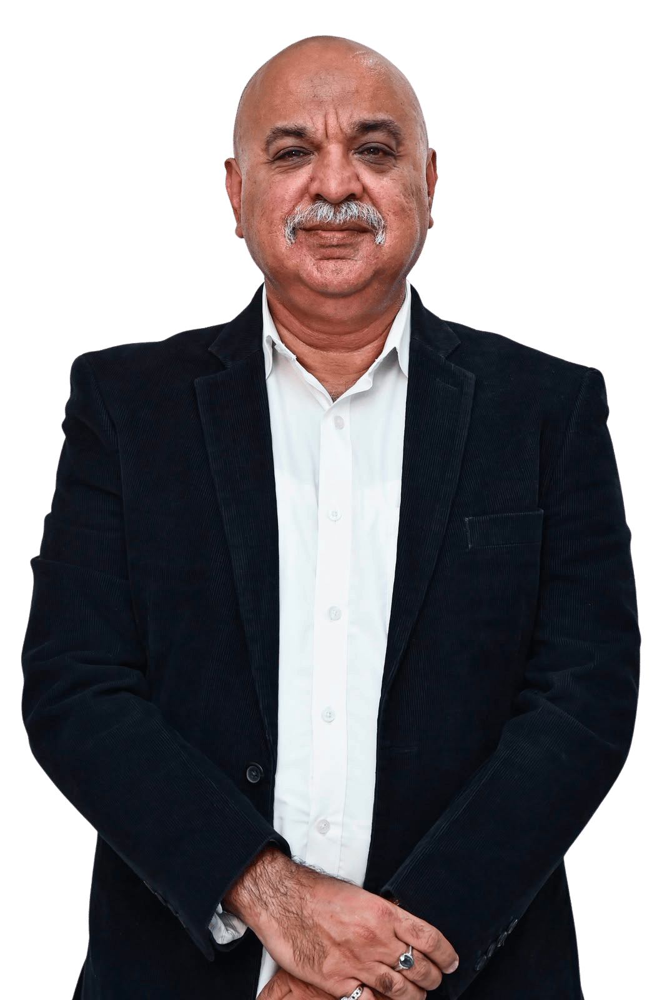

Tarun Panjabi
Managing DirectorFounder · 30+ years in technology
With over 30 years of experience in technology, he began his journey as a one-person venture, working out of a single room with a simple belief: that lasting businesses are built on trust, not transactions. What started small steadily grew through relationships, resilience and an instinct to understand what businesses truly needed from technology. Over the years, this journey has taken Saitronics from supplying technology to becoming a trusted partner to leading Indian and multinational organisations. Today, he continues to lead us with the same entrepreneurial spirit — building relationships that endure, embracing change and helping businesses stay ahead as technology evolves.